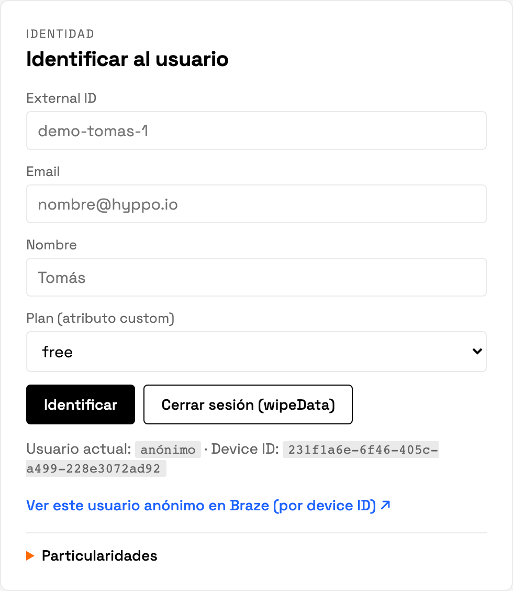
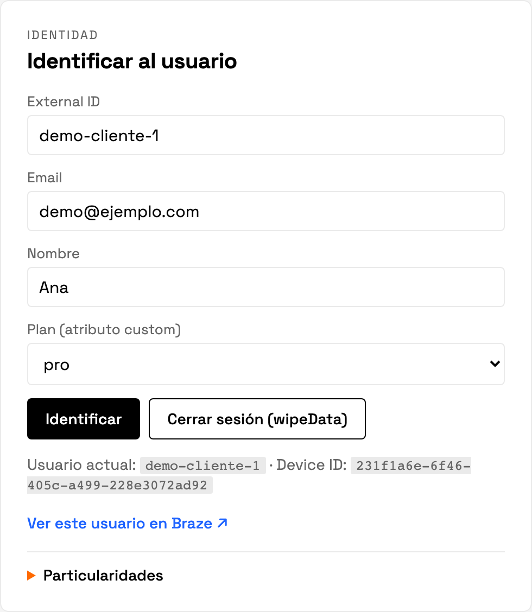
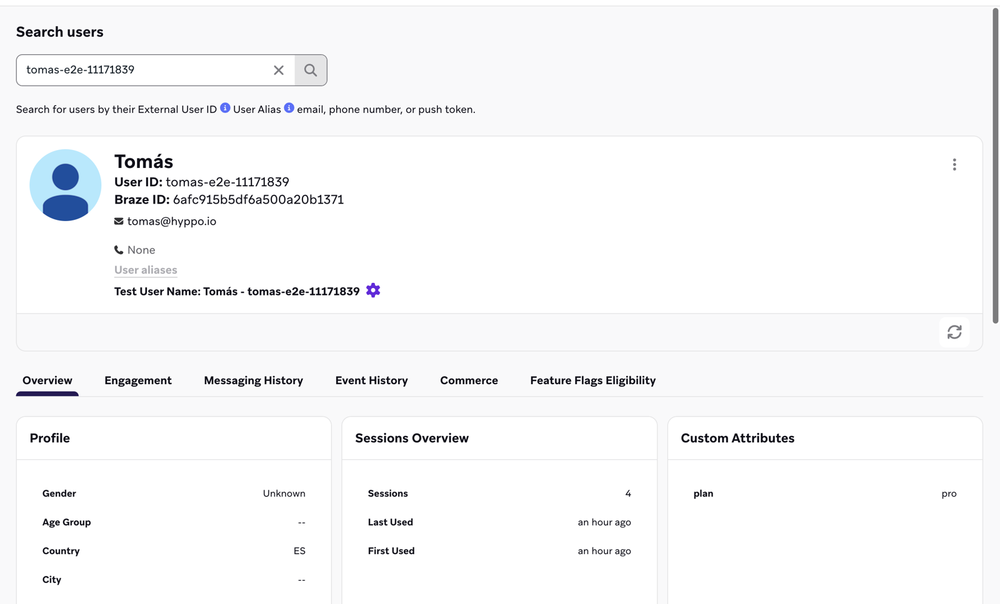
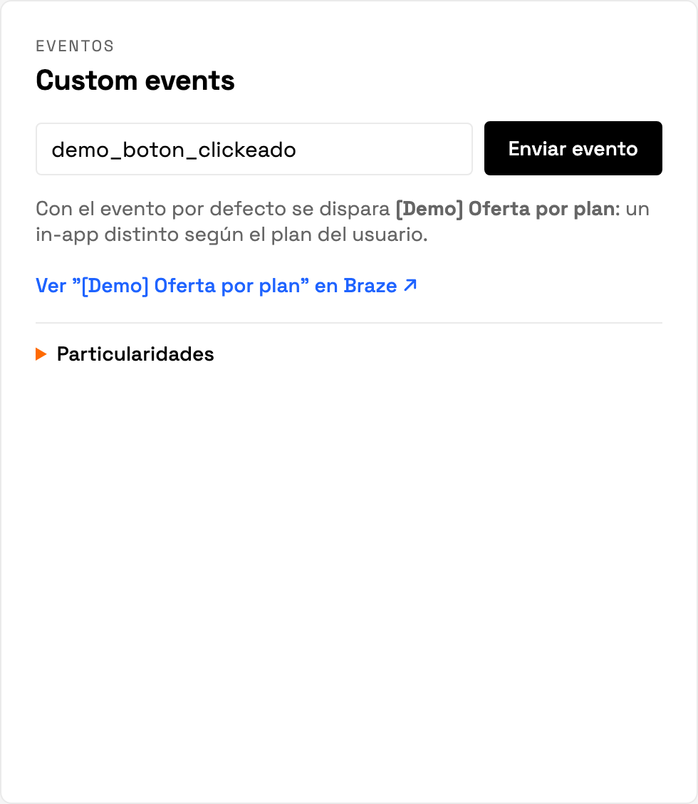
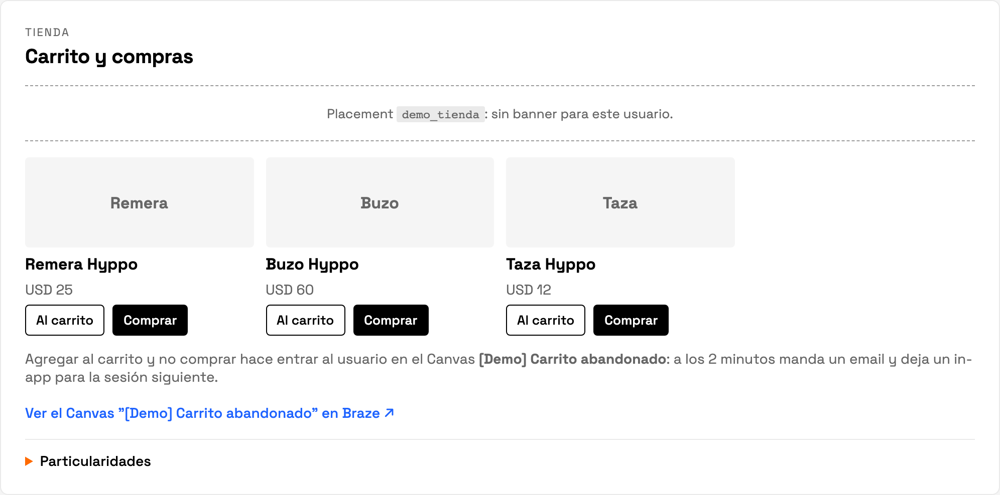
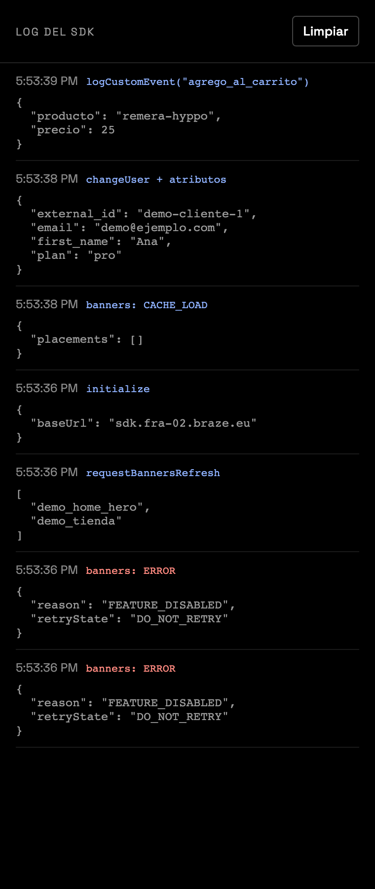

Una buena demo cuenta una historia de punta a punta: alguien llega anónimo, se identifica, hace cosas, y Braze reacciona con mensajes personalizados en el momento justo. La regla es mostrar siempre las dos caras: lo que hace el usuario en la web y cómo aparece en Braze. Cada sección de la demo tiene un link que abre el dashboard en otra pestaña.
Antes de empezar
Preparar el escenario
- Abrir la demo con el bloqueador de anuncios apagado (Brave Shields, uBlock). Si está prendido, la página lo avisa.
- Tener Braze abierto en otra pestaña, en el workspace HYPPO.
- Revisar que estén activas las campañas [Demo] In-app de prueba y [Demo] Oferta por plan, y el Canvas [Demo] Carrito abandonado v2 (los links están en cada sección de la demo).
- Para mostrar el Event User Log con el JSON crudo, el usuario con el que presentás tiene que ser test user del Internal Group Demo Hyppo (Settings → Internal Groups), que ya tiene "Record User Events" activado. Ya están los perfiles con
tomas@hyppo.io; otro usuario se suma desde su perfil con "Add As Test User". - Practicar una vez antes: los in-app de una campaña recién lanzada aparecen recién en la sesión siguiente.
Usuario anónimo
Braze ya sabe quién es, aunque no se haya logueado
Apenas carga la página, el SDK abre una sesión y le asigna un device ID. Mostrar el link "Ver este usuario anónimo en Braze": el perfil existe, con sesiones, navegador y país, pero sin external ID.

Mensaje para el cliente: no se pierde nada de lo que pasa antes del login.
Identificación
El login une todo en un perfil
Completar external ID, email, nombre y plan, y tocar Identificar. Abrir el perfil en Braze: los eventos que hizo como anónimo ahora son de este usuario, y aparecen el email, el nombre y el atributo custom plan.


Contar la particularidad: changeUser no tiene vuelta atrás, y para "desloguear" se usa wipeData().
Segmentación en vivo
El mismo botón, un mensaje distinto para cada plan
Tocar Enviar evento. La campaña [Demo] Oferta por plan muestra un in-app según el plan: invita a pasar a pro, ofrece un beneficio o deriva al account manager. Después cambiar el plan, volver a identificarse y repetir: el mensaje cambia.

Acá se ve el valor de los atributos: el contenido lo decide el dato, no el desarrollador.
In-app personalizado
Un mensaje con el nombre del usuario
Tocar Disparar demo_inapp. Aparece un modal con el nombre que se cargó en el paso 2 (Liquid: {{${first_name}}}). Abrir la campaña en Braze para mostrar el editor y, después, el analytics: impresiones y clicks se suman en el momento.
Carrito abandonado
La orquestación: el momento fuerte de la demo
En la tienda, agregar un producto al carrito y no comprar. El usuario entra en el Canvas [Demo] Carrito abandonado v2: a los 2 minutos (en producción sería una hora) recibe un email con el producto y el precio, y un in-app que aparece en la sesión siguiente.


Mientras tanto, abrir el Canvas en Braze y recorrer el flujo: entrada por evento, espera, un in-app y después una división por plan. Un usuario free recibe un email que además le ofrece pasar a Pro; uno pro o enterprise entra en un test A/B de asunto (Experiment Path 50/50).
Para que el cliente lo vea en vivo: repetir el carrito con otro plan y otro email (por ejemplo nombre+free@empresa.com y nombre+pro@empresa.com, que llegan a la misma casilla como dos perfiles distintos) y comparar los dos emails. Con una persona por demo el test A/B no llega a ser significativo: lo que se muestra es cómo se arma y las métricas por variante.
El plan viaja como propiedad del evento agrego_al_carrito y el Canvas se divide por esa propiedad, no por el atributo del perfil: si el usuario se acaba de identificar, Braze puede no haber procesado todavía el atributo.
Cuando llegue el email ("Tu carrito te espera"), abrirlo y tocar Volver a tu carrito: la demo reconoce al usuario y destaca el producto. Comprarlo cierra el círculo: en el Canvas se ven el email enviado y el clic, y la compra queda en el perfil del usuario y en Revenue.

Al final, el historial del usuario en Braze muestra todo el recorrido: los in-app, el email enviado, entregado, abierto y con clic, y el recordatorio del Canvas.

Si se compra antes de que pasen los 2 minutos, el usuario sale del Canvas y no recibe el email: la salida y la conversión son el evento compro.
Lo que pasa por debajo
El log del SDK
El panel negro de la derecha muestra cada llamada al SDK con sus datos. Sirve para el público técnico: es exactamente lo que el equipo de desarrollo del cliente tendría que implementar.

Cierre
Lo que conviene mencionar
- Bloqueadores de anuncios: los usuarios con bloqueador no llegan a Braze desde la web. Los eventos clave (compras, altas) conviene mandarlos también desde el backend con la REST API.
- SDK Authentication: en producción, el backend firma un JWT por usuario para que nadie se haga pasar por otro.
- Más canales: email, push, WhatsApp, SMS, Banners y Content Cards se orquestan desde el mismo Canvas.
Pendientes del sandbox
Lo que todavía no se puede mostrar
- Banners y Content Cards no están habilitados en el sandbox de partner. Ya se pidieron a Braze.